Ponudba
Možnost nastanitve
Na kmetiji je na voljo šest udobno opremljenih sob s skupno 14 osnovnimi ležišči. Gostom je na voljo tudi kopalnica s straniščem.
Na kmetiji lahko z dodatnimi ležišči prenoči do 25 gostov. Nastanitev je primerna za družine in skupine.
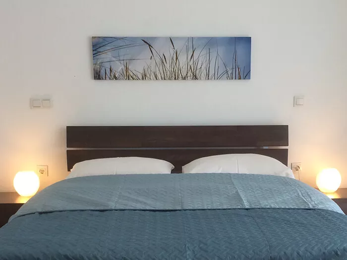
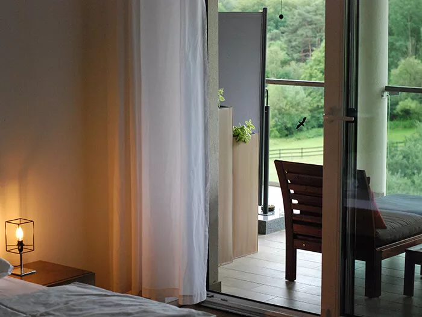
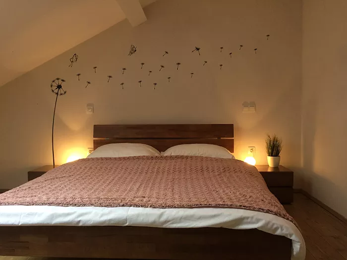
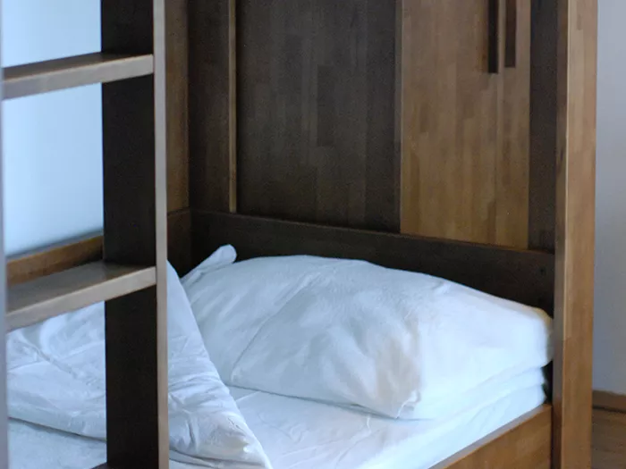
Poroke in praznovanja
Zunanji prireditveni prostor turistične kmetije Smodiš najpogosteje gosti poročna slavja, primeren pa je tudi za obletnice, rojstne dneve in druga praznovanja na prostem.
Na voljo je tudi notranji gostinski prostor za zasebna praznovanja, slavnostna kosila in poslovna srečanja. Glede na vrsto dogodka in število gostov se lahko dogovorimo za uporabo enega ali obeh prostorov.
Za informacije o prostih terminih in možnostih izvedbe dogodka nas pokličite na 02 551 60 50.
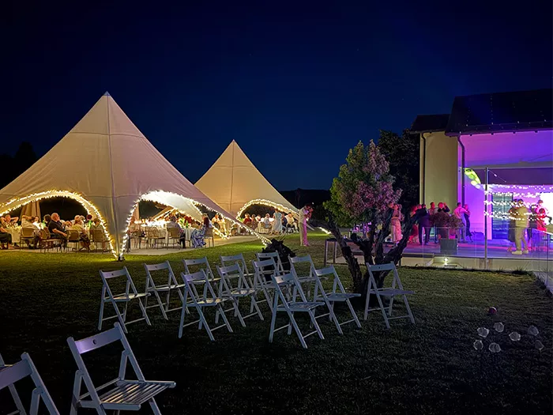
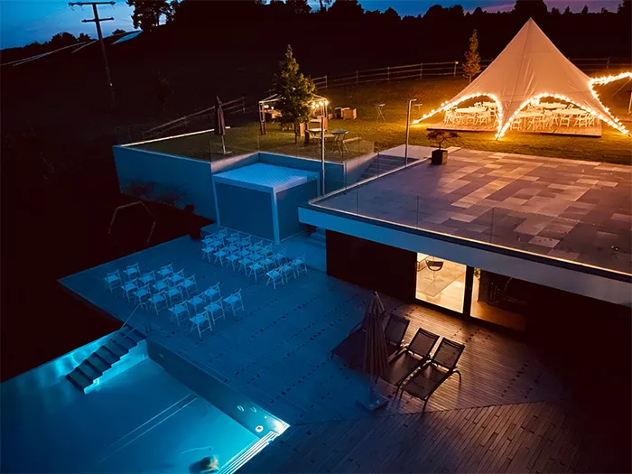
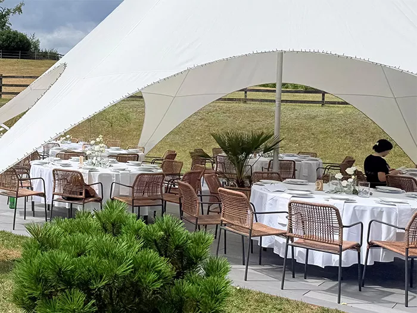
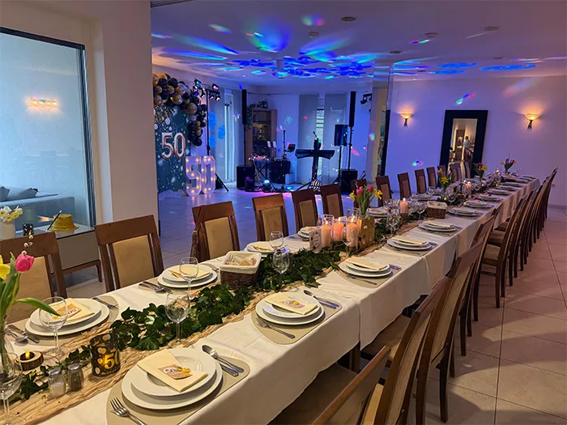
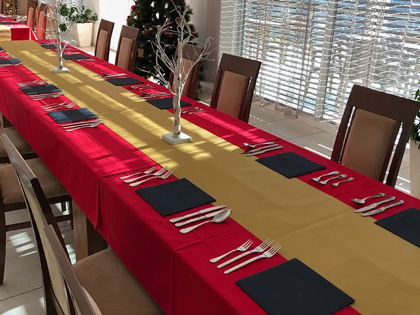
Domača kulinarika
Turistična kmetija Smodiš je pravi naslov za vse, ki si želijo okusiti domačo kulinariko. Po dogovoru pripravimo degustacijo domačih dobrot, od hladnih narezkov s kruhom do prekmurskih specialitet.
Ob domačih dobrotah lahko poskusite tudi vina in žganje goričkih pridelovalcev.
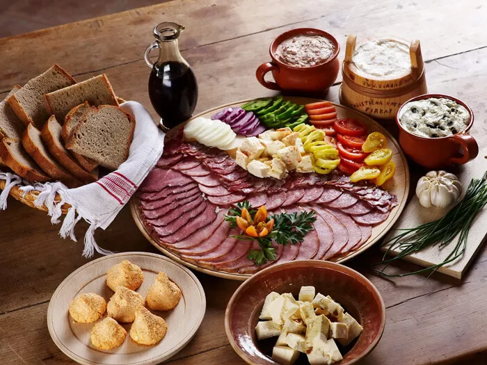
Aktivnosti in sprostitev
Goričko lahko raziskujete peš ali s kolesom. Odpravite se na sprehod po okoliških poteh ali s kolesom obiščite bližnje zanimivosti.
Po raziskovanju Goričkega se lahko osvežite v zunanjem bazenu na kmetiji. Bazen je prijeten tudi za dneve, ko si želite ostati na kmetiji, uživati na svežem zraku in si vzeti čas za počitek.
Na kmetiji je možna tudi izposoja koles. Za informacije o razpoložljivosti koles nas kontaktirajte.

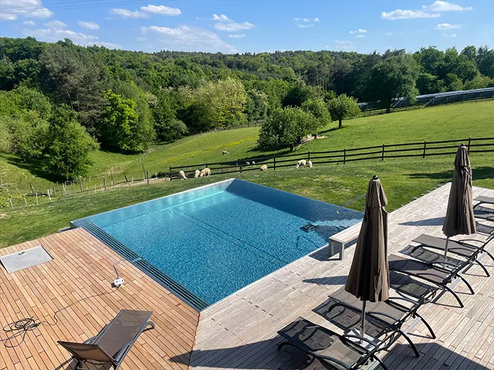
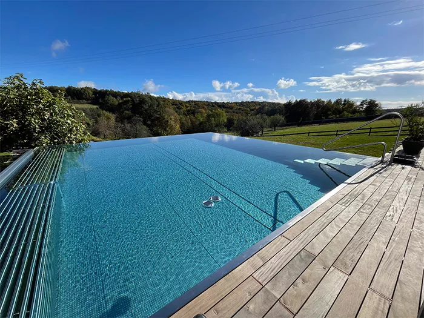